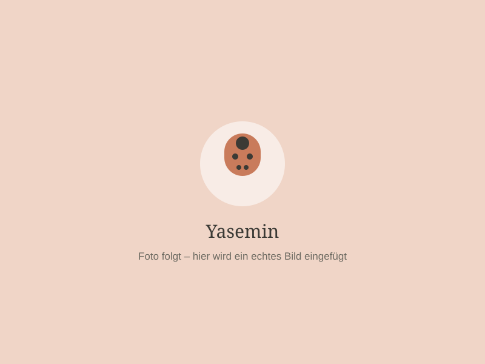
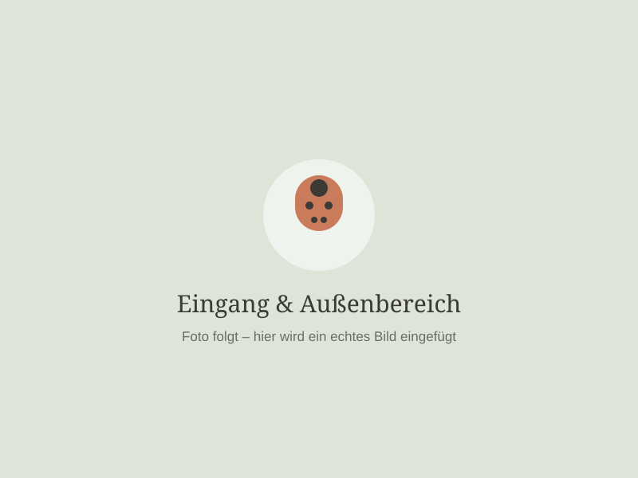

🎓
Qualifiziert
Qualifizierte Kindertagespflegeperson mit Pflegeerlaubnis des Jugendamts [Landkreis Esslingen – bitte Qualifikation/Kurs ergänzen].
Ich bin qualifizierte Kindertagespflegeperson und betreue Kinder mit viel Herz, Geduld und Aufmerksamkeit.

Für mich bedeutet Kindertagespflege mehr als nur Betreuung. Mir ist wichtig, jedes Kind als eigene Persönlichkeit wahrzunehmen, seine Bedürfnisse zu respektieren und ihm die Sicherheit zu geben, die es für seine Entwicklung braucht.
Ich bin selbst Mutter von drei Kindern. Dadurch kenne ich das Familienleben nicht nur aus beruflicher Sicht, sondern auch aus dem Alltag einer Familie. Ich weiß, wie wichtig es Eltern ist, ihr Kind in liebevollen und vertrauensvollen Händen zu wissen.
Genau diese familiäre Atmosphäre möchte ich auch in meiner Kindertagespflege schaffen. Mein Wunsch ist, dass sich jedes Kind bei der Glückskäfer Bande willkommen, sicher und wohl fühlt.
Qualifizierte Kindertagespflegeperson mit Pflegeerlaubnis des Jugendamts [Landkreis Esslingen – bitte Qualifikation/Kurs ergänzen].
Drei eigene Kinder – und damit ein echtes Gespür für den Familienalltag, für Bedürfnisse und für das, was Eltern wirklich wichtig ist.
Geduld, Aufmerksamkeit und echte Zuwendung – jeden Tag, für jedes Kind.
Da die Betreuung bei mir zu Hause stattfindet, erleben die Kinder eine familiäre Umgebung. Meine eigenen Kinder gehören ebenfalls zu unserem Familienalltag. Dadurch entsteht eine natürliche Atmosphäre, in der die Kinder miteinander spielen, voneinander lernen und gemeinsam schöne Momente erleben können.
Bei uns darf gelacht, gespielt, entdeckt, getröstet und gemeinsam gewachsen werden.

Du möchtest dein Kind in einer kleinen, liebevollen und familiären Kindertagespflege betreuen lassen? Dann melde dich gerne bei mir. Ich freue mich darauf, dich und dein Kind kennenzulernen.